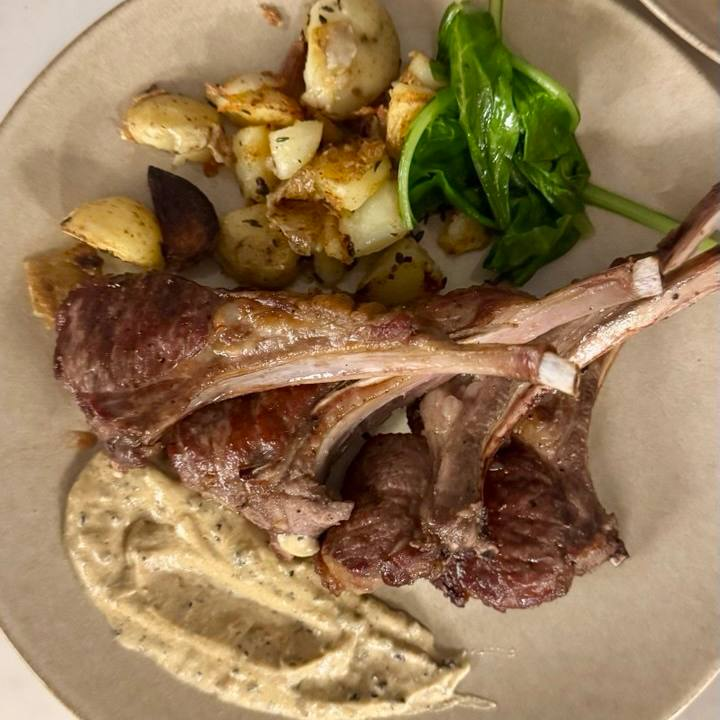

Lamb Chops with baby potato and peppercorn sauce

About the dish
Incredibly succulent lamb chops with golden
roasted baby potatoes, wilted spinach and
a rich peppercorn sauce. This is a dish that
shines just as brightly at a festive table for
a crowd as it does at a quiet dinner for two
with someone you love. And best of all, you'll
need just one pan and no oil to make it!
Ingredients (for 2 portions)
- 6 pcs lamb chops
- 500g baby potato
- 300g spinach
- 4-5 cloves of garlic
- Few sprigs of thyme
- Salt and pepper, to taste
For the peppercorn sauce
- 120ml fresh cream 33%
- 100ml chicken stock
- 1,5 tbsp green/black pepper
- 1 shallots
- 20g butter
- Salt, to taste
Follow the steps
- Wash the baby potatoes and boil them
for 7–8 minutes, then cut them in half.
- Score the fat on the lamb chops (on the bone side)
with shallow cuts. Rub with salt and pepper,
working it well into the cuts in the fat.
- Place the lamb fat-side down in a cold pan
and set it over low heat.
- Once the fat starts to render, turn up the hit,
add the garlic
cloves, unpeeled and crushed with the flat
side of a knife. Cook until the fat is golden
and crisp.
- Add the thyme, then sear the lamb for 2–2½
minutes on each side.
- Transfer to a plate, cover loosely with foil
and let it rest for 5–10 minutes.
- In the remaining fat, fry the boiled baby potatoes
for 5–7 minutes until golden.
- Add the spinach to the same pan and cook for 2–3
minutes until wilted.
- For the peppercorn sauce melt the butter in
a saucepan and sauté the finely chopped shallot
and crushed peppercorns for 1–2 minutes.
- Pour in the stock and reduce
by half (3–4 minutes).
- Stir in the cream, season with salt and simmer
for 5–6 minutes until thickened.
Back to all recipes